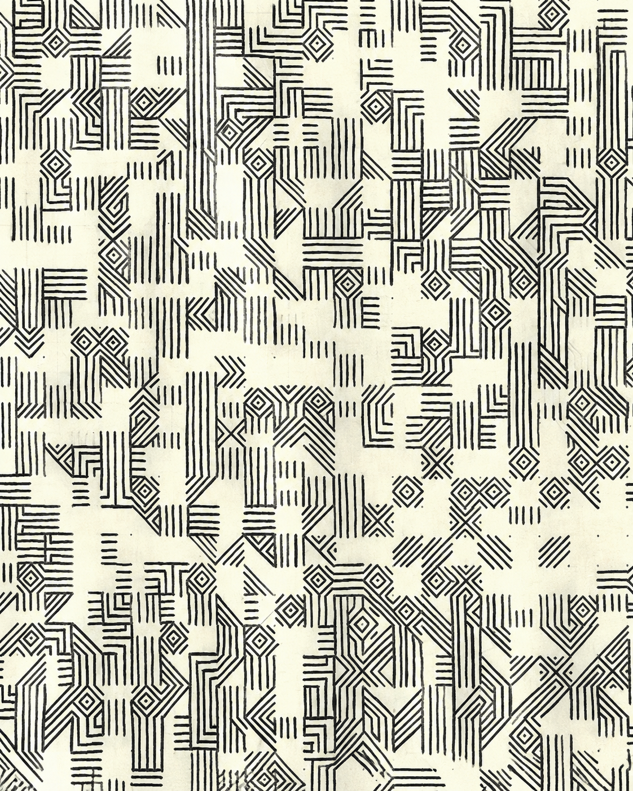
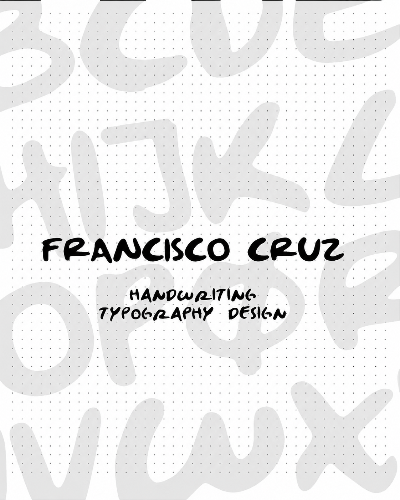

Ver proyecto
Pattern Typography
Una exploración creativa para decodificar y reconstruir la anatomía del alfabeto latino, convirtiendo letras conocidas en patrón geométrico abstracto.

Ver proyecto
Handmade Typography
Una tipografía construida a partir de mi propia letra, digitalizada letra por letra, para darle un toque hecho a mano a proyectos digitales, notas y bocetos.
Ver proyecto
Chessboard
Una pieza central para la mesa de centro tanto como un juego de ajedrez, con cada pieza tallada a su propio corte y todo el set plegándose en su propio estuche.

Ver proyecto
Dibujos Artísticos
Una serie de estudios a lápiz enfocados en estructura y línea: manos, formas naturales y objetos cotidianos, dibujados de observación.